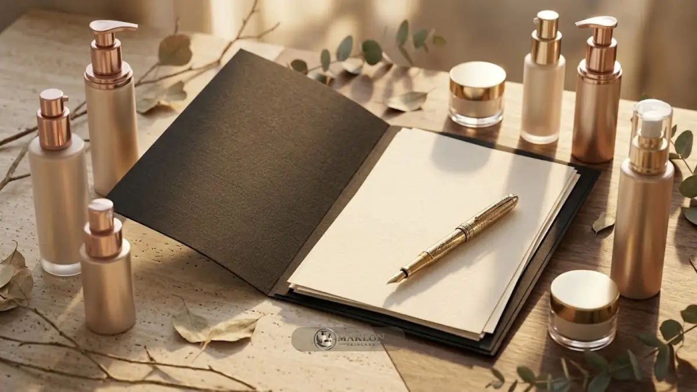

Checklist teknis OEM/ODM skincare mencakup pemeriksaan legalitas usaha, audit sertifikasi CPKB pabrik, perumusan brief formula, pengujian stabilitas sediaan, spesifikasi kemasan, akta kontrak tertulis, dan rencana notifikasi BPOM sebelum proses produksi massal dijalankan.
- BPOM menerbitkan 152 Sertifikat SPKB dan 219 Sertifikat Pemenuhan Aspek CPKB untuk industri kosmetik golongan A dan B sepanjang 2023-2025.
- Legalitas usaha dan status pemohon notifikasi harus siap sebelum pendaftaran produk.
- Bentuk sediaan produk harus tercantum pada sertifikat pabrik.
- Brief formula, uji, kemasan, dan kontrak perlu tertulis agar tidak terjadi sengketa.
Apa Saja Dokumen Legalitas yang Harus Siap?
Siapkan Nomor Induk Berusaha (NIB), identitas kependudukan, dan NPWP pelaku usaha, serta kejelasan status sebagai pemohon notifikasi sebelum pihak pabrik maklon memulai proses pendaftaran produk di sistem resmi BPOM.
Pengajuan notifikasi kosmetika di sistem BPOM merupakan tahap lanjutan yang hanya dapat diakses setelah pelaku usaha mengantongi NIB yang terverifikasi.
Peraturan perundang-undangan BPOM mewajibkan setiap badan usaha yang mengedarkan produk kosmetik di wilayah Indonesia memiliki izin edar sah berupa nomor notifikasi.
Periksa juga bentuk badan usaha Anda, apakah berstatus perseorangan, CV, atau Perseroan Terbatas (PT), karena bentuk badan hukum ini memengaruhi dokumen persyaratan dan penandatanganan kontrak kerja sama.
Simpan salinan digital dan berkas fisik dari seluruh perizinan yang dimiliki.
Bila muncul keraguan mengenai persyaratan administratif terbaru, lakukan verifikasi langsung melalui portal BPOM atau konsultasikan dengan tim layanan pengurusan BPOM dan Halal terpercaya.
Bagaimana Memeriksa Sertifikat CPKB dan Bentuk Sediaan Pabrik?
Mintalah salinan sertifikat CPKB atau Sertifikat Pemenuhan Aspek CPKB resmi dari pabrik mitra Anda.
Pastikan bentuk sediaan yang ingin Anda buat, seperti serum wajah, krim pelembap, atau toner, benar-benar tercantum sebagai sediaan yang disetujui otoritas BPOM.
CPKB adalah singkatan dari Cara Pembuatan Kosmetik yang Baik, yaitu standar mutu menyeluruh yang mengatur kebersihan ruang produksi, kalibrasi alat, higienitas operator, hingga penanganan limbah sediaan.

Kepala BPOM pada Juni 2026 menyosialisasikan Peraturan BPOM Nomor 8 Tahun 2026 tentang sertifikasi CPKB untuk memperketat jaminan mutu sediaan kosmetik dalam negeri.
Data resmi BPOM mencatat sebanyak 152 Sertifikat SPKB serta 219 Sertifikat Pemenuhan Aspek CPKB telah diterbitkan bagi industri kosmetik golongan A dan B sepanjang rentang tahun 2023 hingga 2025.
Ketentuan regulasi BPOM menegaskan bahwa fasilitas industri hanya berhak memproduksi jenis kosmetik yang bentuk sediaannya disetujui pada lampiran sertifikat izinnya.
Apabila pihak pabrik tidak mencantumkan sediaan serum pada sertifikat izinnya, maka proyek pembuatan produk serum yang Anda jalankan bersama pabrik tersebut berisiko mengalami pembatalan izin edar.
Periksa pula tanggal masa berlaku sertifikat serta kualifikasi golongan industri pabrik tersebut, apakah tergolong industri Golongan A yang berizin lengkap atau Golongan B dengan lingkup sediaan terbatas.
Apa yang Harus Ada dalam Brief Produk?
Brief produk berisi profil target konsumen, klaim manfaat yang diinginkan, bentuk sediaan, kisaran target harga, tekstur sediaan, aroma, serta daftar bahan aktif yang wajib dihindari agar formulator pabrik dapat meracik sampel yang akurat.
Penyusunan creative and technical brief yang terperinci akan menghemat waktu uji coba sampel dan mencegah biaya revisi formula yang berulang-ulang.
Cantumkan batas target tingkat keasaman (pH) kulit, preferensi bahan aktif turunan tumbuhan, kepatuhan sertifikasi halal, serta batas maksimal biaya produksi per botol.
Pada model bisnis maklon skincare ODM, brief teknis ini membantu tim formulator mencocokkan formula siap pakai dari katalog yang paling mendekati ekspektasi Anda.
Sedangkan pada proyek maklon skincare OEM, lembar brief menjadi landasan utama bagi divisi litbang pabrik untuk merancang formulasi custom eksklusif dari nol.
Sertakan contoh fisik atau referensi tekstur dan daya serap produk di pasaran tanpa meminta pabrik menjiplak formula merek milik orang lain.
Simpan salinan lembar brief yang telah ditandatangani dan disetujui bersama sebagai dokumen acuan baku pengujian sampel (sample approval).
Uji Apa Saja yang Perlu Disepakati?
Sepakati jenis uji stabilitas sediaan, uji cemaran mikrobiologi, uji kompatibilitas kemasan, serta uji keamanan klinis kulit yang relevan sebelum batch produksi massal disetujui.
Tetapkan secara tertulis pihak mana yang bertindak sebagai pelaksana pengujian laboratorium serta siapa yang menanggung pembiayaannya di dalam perjanjian kerja sama.
Uji stabilitas sediaan bertujuan menilai apakah konsistensi warna, aroma wewangian, angka pH, dan tekstur cairan tetap stabil selama masa simpan produk di pasaran.
Uji kompatibilitas kemasan memastikan senyawa aktif formula tidak bereaksi negatif dengan material plastik botol, logam pompa, atau pipet dropper.
Sedangkan uji efektivitas pengawet (preservative challenge test) menguji apakah sistem pengawet mampu melindungi formula dari ancaman pertumbuhan jamur dan bakteri berbahaya.
Pelajari rincian parameter pengujian ini pada panduan komprehensif standar QC laboratorium dan uji stabilitas skincare.
Mintalah salinan lembar laporan resmi hasil pengujian laboratorium (Certificate of Analysis) yang ditandatangani apoteker penanggung jawab teknis.
Bila pihak pabrik hanya menyampaikan kesimpulan uji secara lisan tanpa bukti dokumen cetak, anggaplah data keamanan produk Anda belum memadai untuk diajukan ke BPOM.
Bagaimana Menyusun Spesifikasi Kemasan dan Label?
Tetapkan spesifikasi kemasan primer dan sekunder, pemilihan material wadah, kapasitas volume isi, tata letak desain label, serta informasi wajib legalitas sebelum pengadaan botol dilakukan.
Revisi kemasan setelah proses pencetakan massal membutuhkan biaya yang sangat tinggi dan menyebabkan keterlambatan jadwal rilis produk.
Kemasan primer adalah wadah yang bersentuhan langsung dengan cairan produk, sedangkan kemasan sekunder berupa kotak dus karton luar atau plastik penyegel.
Pilihlah material kemasan primer yang kompatibel dengan sifat kimia formula sediaan.
Sebagai contoh, gunakan botol kaca gelap (amber glass) atau botol kedap udara (airless pump) untuk formula yang rentan teroksidasi oleh paparan cahaya dan oksigen bebas.
Kaidah teknis pemilihan botol dan tata letak grafis dapat Anda pelajari lebih mendalam pada artikel desain packaging skincare estetis dan menjual.
Pastikan desain label memuat nama produk, daftar komposisi bahan baku (INCI), nomor batch produksi, tanggal kedaluwarsa, identitas produsen, dan ruang nomor notifikasi BPOM serta logo halal resmi.
Mintalah persetujuan draf label secara tertulis dari bagian regulasi pabrik maklon sebelum mengirimkan berkas desain ke vendor percetakan kemasan.
Apa Isi Minimum Kontrak Maklon?
Akta kontrak maklon minimal memuat ruang lingkup kerja, hak kepemilikan formula sediaan, status eksklusivitas, kuantitas pesanan minimum (MOQ), standar mutu lulus uji, jadwal timeline produksi, termin pembayaran, klausul kerahasiaan dagang, serta mekanisme ganti rugi bila terjadi penarikan produk (product recall).
Persatuan Perusahaan Kosmetika Indonesia (Perkosmi) senantiasa menekankan bahwa pihak pemberi kontrak (brand) dan penerima kontrak (pabrik) wajib menjalankan perannya masing-masing secara profesional dan bertanggung jawab.
Dokumen kontrak resmi adalah instrumen hukum yang sah untuk melindungi hak dan membagi kewajiban kedua belah pihak.
Tambahkan klausul kriteria penerimaan barang di gudang (acceptance criteria), prosedur penanganan produk reject cacat produksi, hak audit ke fasilitas pabrik, serta klausul penyelesaian sengketa di badan arbitrase.
Jika berkas kontrak kerja sama ini diwajibkan untuk dilampirkan dalam proses audit BPOM, pastikan akta perjanjian telah ditandatangani di atas meterai sah oleh pimpinan kedua entitas usaha.
Sangat dianjurkan untuk mengonsultasikan draf kontrak tersebut bersama konsultan hukum atau penasihat bisnis berpengalaman sebelum menandatanganinya.
Bagaimana Menyiapkan Rencana Notifikasi dan Klaim?
Rencanakan penentuan pihak pemohon notifikasi, kelengkapan berkas formula, sinkronisasi klaim khasiat produk, dan jadwal pengajuan berkas sejak awal proyek dimulai.
Pastikan tidak ada zat terlarang atau bahan berbahaya yang disusupkan ke dalam formulasi kosmetik yang Anda daftarkan.
Pakar farmasi UGM menggarisbawahi bahwa pada tahun 2025 lalu, BPOM menindak tegas dan menarik lebih dari 100 produk kosmetika ilegal karena kedapatan mengandung zat berbahaya seperti merkuri, hidrokuinon, dan asam retinoat.
Verifikasi seluruh daftar komposisi bahan terhadap ketentuan Peraturan BPOM yang berlaku sebelum memulai produksi massal.
Pastikan klaim manfaat yang Anda cetak pada kemasan fisik, materi situs web, dan materi iklan media sosial selaras dengan klaim yang disetujui dalam izin notifikasi BPOM.
Hindari penggunaan klaim berlebihan yang menyerupai obat medis atau menjanjikan kesembuhan penyakit kulit tertentu.
Siapkan pula kalender monitoring perpanjangan izin edar, mengingat masa berlaku notifikasi kosmetik BPOM pada umumnya berdurasi tiga tahun.
Konsultasikan Checklist Proyek Maklon Anda
Ingin memastikan setiap dokumen legalitas, sertifikasi CPKB, formulasi sediaan, dan izin edar BPOM brand Anda siap 100% tanpa risiko kendala teknis? Diskusikan kebutuhan proyek Anda bersama tim ahli kami melalui konsultasi maklon skincare resmi sekarang juga.
Kesalahan Teknis Apa yang Paling Sering Terjadi?
Kesalahan teknis yang paling sering terjadi adalah tidak mengecek kesesuaian bentuk sediaan pada sertifikat pabrik, menyusun brief produk yang tidak tertulis jelas, melewatkan uji kompatibilitas botol kemasan, dan mengabaikan klausul kepemilikan formula di dalam draf kontrak.
Kekeliruan teknis lainnya meliputi mencetak ribuan lembar kardus kemasan sebelum nomor notifikasi BPOM terbit, menunda pengurusan izin hingga produk selesai diracik, serta tidak menyimpan sampel pembanding (retained sample) dari setiap batch produksi.
Cegah seluruh potensi kerugian tersebut dengan menjadikan checklist teknis ini sebagai dokumen panduan kerja bersama tim manajemen pabrik maklon Anda.
Setelah seluruh poin pada checklist terpenuhi secara lengkap, susunlah estimasi waktu dan timeline produksi OEM/ODM bersama pabrik dan pelajari kembali ulasan fundamental pada artikel mitos vs fakta seputar OEM/ODM skincare.
Rencanakan pula strategi pemasaran digital dan saluran distribusi serta alokasi promosi sejak dini agar produk baru Anda langsung terserap maksimal oleh pasar begitu selesai diproduksi.
Kesimpulan: Checklist Lengkap Memulai Proyek Skincare
Penerapan checklist teknis secara disiplin menjamin proyek manufaktur OEM atau ODM skincare Anda dimulai dengan landasan legalitas yang kokoh, sertifikasi pabrik yang valid, formulasi yang stabil, kemasan yang aman, dan kontrak yang berkeadilan.
Kelengkapan persiapan teknis ini secara nyata memangkas risiko revisi formula yang mahal, mencegah potensi penarikan produk dari pasar, serta melindungi bisnis Anda dari potensi sengketa hukum di masa depan.
- Pastikan NIB dan kejelasan status pemohon notifikasi telah rampung.
- Verifikasi sertifikat CPKB dan kesesuaian bentuk sediaan fasilitas pabrik.
- Dokumentasikan brief formula sediaan, laporan pengujian laboratorium, dan klausul kontrak secara tertulis.
- Selaraskan narasi klaim promosi pada kemasan dengan dokumen notifikasi resmi BPOM.
Catatan: Isi panduan checklist teknis ini disusun sebagai materi edukasi bisnis kosmetik secara umum. Untuk kepastian prosedur hukum terbaru, konsultasikan dokumen Anda bersama pihak BPOM atau konsultan perizinan kosmetik berlisensi.